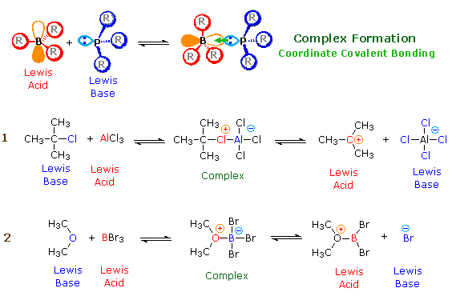
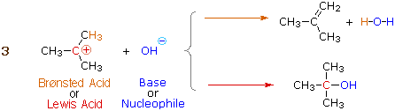
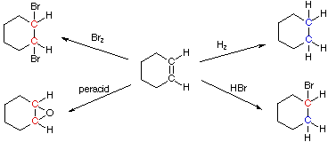
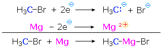
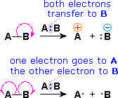
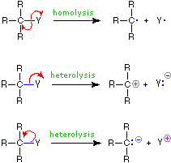
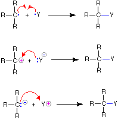
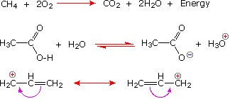
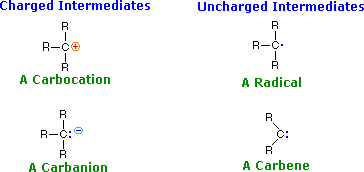

Lewis Theory
According to the Lewis theory, an acid is an electron pair acceptor, and a base is an electron pair donor. Lewis bases are also Brønsted bases; however, many Lewis acids, such as BF3, AlCl3 and Mg2+, are not Brønsted acids. The product of a Lewis acid-base reaction, is a neutral, dipolar or charged complex, which may be a stable covalent molecule. As shown at the top of the following drawing, coordinate covalent bonding of a phosphorous Lewis base to a boron Lewis acid creates a complex in which the formal charge of boron is negative and that of phosphorous is positive. In this complex, boron acquires a neon valence shell configuration and phosphorous an argon configuration. If the substituents (R) on these atoms are not large, the complex will be favored at equilibrium. However, steric hindrance of bulky substituents may prohibit complex formation. The resulting mixture of non-bonded Lewis acid/base pairs has been termed "frustrated", and exhibits unusual chemical behavior.
Two examples of Lewis acid-base equilibria that play a role in chemical reactions are shown in equations 1 & 2 below.

In the first example, an electron deficient aluminum atom bonds to a covalent chlorine atom by sharing one of its non-bonding valence electron pairs, and thus achieves an argon-like valence shell octet. Because this sharing is unilateral (chlorine contributes both electrons), both the aluminum and the chlorine have formal charges, as shown. If the carbon chlorine bond in this complex breaks with both the bonding electrons remaining with the more electronegative atom (chlorine), the carbon assumes a positive charge. We refer to such carbon species as carbocations. Carbocations are also Lewis acids, as the reverse reaction demonstrates.
Many carbocations (but not all) may also function as Brønsted acids. Equation 3 illustrates this dual behavior; the Lewis acidic site is colored red and three of the nine acidic hydrogen atoms are colored orange. In its Brønsted acid role the carbocation donates a proton to the base (hydroxide anion), and is converted to a stable neutral molecule having a carbon-carbon double bond.

A terminology related to the Lewis acid-base nomenclature is often used by organic chemists. Here the term electrophile corresponds to a Lewis acid, and nucleophile corresponds to a Lewis base.
Electrophile: An electron deficient atom, ion or molecule that has an affinity for an electron pair, and will bond to a base or nucleophile.
Nucleophile: An atom, ion or molecule that has an electron pair that may be donated in bonding to an electrophile (or Lewis acid).
To learn more about the relationship of basicity and nucleophilicity,
and for examples of acid/base catalysis of organic reactions Click Here.
|
|---|
Oxidation and Reduction Reactions
A parallel and independent method of characterizing organic reactions is by oxidation-reduction terminology. Carbon atoms may have any oxidation state from –4 (e.g. CH4 ) to +4 (e.g. CO2 ), depending upon their substituents. Fortunately, we need not determine the absolute oxidation state of each carbon atom in a molecule, but only the change in oxidation state of those carbons involved in a chemical transformation. To determine whether a carbon atom has undergone a redox change during a reaction we simply note any changes in the number of bonds to hydrogen and the number of bonds to more electronegative atoms such as O, N, F, Cl, Br, I, & S that has occurred. Bonds to other carbon atoms are ignored. This count should be conducted for each carbon atom undergoing any change during a reaction.
If the number of hydrogen atoms bonded to a carbon increases,
and/or if the number of bonds to more electronegative atoms decreases,
the carbon in question has been reduced (i.e. it is in
a lower oxidation state).
If the number of hydrogen atoms bonded to a carbon decreases,
and/or if the number of bonds to more electronegative atoms increases,
the carbon in question has been oxidized (i.e. it is in
a higher oxidation state).
If there has been no change in the number of such bonds,
then the carbon in question has not changed its oxidation state.
In the hydrolysis reaction of a nitrile shown above, the blue
colored carbon has not changed its oxidation state.
These rules are illustrated by the following four addition reactions involving the same starting material, cyclohexene. Carbon atoms colored blue are reduced, and those colored
red are oxidized. In the addition of hydrogen both carbon atoms
are reduced, and the overall reaction is termed a reduction.
Peracid epoxidation and addition of bromine oxidize both carbon
atoms, so these are termed oxidation reactions. Addition of HBr
reduces one of the double bond carbon atoms and oxidizes the other;
consequently, there is no overall redox change in the substrate
molecule.

For a discussion of how oxidation state numbers may be assigned to carbon atoms Click Here.
|
|---|
Since metals such as lithium and magnesium are less electronegative than hydrogen, their covalent bonds to carbon are polarized so that the carbon is negative (reduced) and the metal is positive (oxidized). Thus, Grignard reagent formation from an alkyl halide reduces the substituted carbon atom. In the following equation and half-reactions the carbon atom (blue) is reduced and the magnesium (magenta) is oxidized.

3. Classification by Functional Group
Functional groups are atoms or small groups of atoms (usually two to four) that exhibit a characteristic reactivity when treated with certain reagents. To view a table of the common functional groups and their class names Click Here. A particular functional group will almost always display its characteristic chemical behavior when it is present in a compound. Because of this, the discussion of organic reactions is often organized according to functional groups. The following table summarizes the general chemical behavior of the common functional groups. For reference, the alkanes provide a background of behavior in the absence of more localized functional groups.
| Functional Class | Formula | Characteristic Reactions |
|---|
| Alkanes | C–C, C–H | Substitution (of H, commonly by Cl or Br)
Combustion (conversion to CO2 & H2O) |
| Alkenes | C=C–C–H | Addition
Substitution (of H) |
| Alkynes | C≡C–H | Addition
Substitution (of H) |
| Alkyl Halides | H–C–C–X | Substitution (of X)
Elimination (of HX) |
| Alcohols | H–C–C–O–H | Substitution (of H); Substitution (of OH)
Elimination (of HOH); Oxidation (elimination of 2H) |
| Ethers | (α)C–O–R | Substitution (of OR); Substitution (of α–H) |
| Amines | C–NRH | Substitution (of H);
Addition (to N); Oxidation (of N) |
| Benzene Ring | C6H6 | Substitution (of H) |
| Aldehydes | (α)C–CH=O | Addition
Substitution (of H or α–H) |
| Ketones | (α)C–CR=O | Addition
Substitution (of α–H) |
| Carboxylic Acids | (α)C–CO2H | Substitution (of H); Substitution (of OH)
Substitution (of α–H); Addition (to C=O) |
| Carboxylic Derivatives | (α)C–CZ=O
(Z = OR, Cl, NHR, etc.) | Substitution (of Z); Substitution (of α–H)
Addition (to C=O) |
This table does not include any reference to rearrangement, due to the fact that such reactions are found in all functional classes, and are highly dependent on the structure of the reactant. Furthermore, a review of the overall reaction patterns presented in this table discloses only a broad and rather non-specific set of reactivity trends. This is not surprising, since the three remaining categories provide only a coarse discrimination (comparable to identifying an object as animal, vegetable or mineral). Consequently, apparent similarities may fail to reflect important differences. For example, addition reactions to C=C are significantly different from additions to C=O, and substitution reactions of C-X proceed in very different ways, depending on the hybridization state of carbon.
The Variables of Organic Reactions
In an effort to understand how and why reactions of functional groups take place in the way they do, chemists try to discover just how different molecules and ions interact with each other as they come together. To this end, it is important to consider the various properties and characteristics of a reaction that may be observed and/or measured as the reaction proceeds . The most common and useful of these are listed below:
1. Reactants and Reagents
| A. Reactant Structure: Variations in the structure of the reactant may have a marked influence on the course of a reaction, even though the functional group is unchanged. Thus, reaction of 1-bromopropane with sodium cyanide proceeds smoothly to yield butanenitrile, whereas 1-bromo-2,2-dimethylpropane fails to give any product and is recovered unchanged. In contrast, both alkyl bromides form Grignard reagents (RMgBr) on reaction with magnesium.
|
B. Reagent Characteristics: Apparently minor changes in a reagent may lead to a significant change in the course of a reaction. For example, 2-bromopropane gives a substitution reaction with sodium methylthiolate but undergoes predominant elimination on treatment with sodium methoxide.
|
2. Product Selectivity
| A. Regioselectivity: It is often the case that addition and elimination reactions may, in principle, proceed to more than one product. Thus 1-butene might add HBr to give either 1-bromobutane or 2-bromobutane, depending on which carbon of the double bond receives the hydrogen and which the bromine. If one possible product out of two or more is formed preferentially, the reaction is said to be regioselective.
Simple substitution reactions are not normally considered regioselective, since by definition only one constitutional product is possible. However, rearrangements are known to occur during some reactions.
|
B. Stereoselectivity: If the reaction products are such that stereoisomers may be formed, a reaction that yields one stereoisomer preferentially is said to be stereoselective. In the addition of bromine to cyclohexene, for example, cis and trans-1,2-dibromocyclohexane are both possible products of the addition. Since the trans-isomer is the only isolated product, this reaction is stereoselective.
|
C. Stereospecificity: This term is applied to cases in which stereoisomeric reactants behave differently in a given reaction. Examples include:
(i) Formation of different stereoisomeric products, as in the reaction of enantiomeric 2-bromobutane isomers with sodium methylthiolate, shown in the following diagram.
Here, the (R)-reactant gives the configurationally inverted (S)-product, and (S)-reactant produces (R)-product. The (R) and (S) notations for configuration are described in a later section of this text.
(ii) Different rates of reaction, as in the base-induced elimination of cis & trans-4-tert-butylcyclohexyl bromide (equation 1 below).
(iii) Different reaction paths leading to different products, as in the base-induced elimination of cis & trans-2-methylcyclohexyl bromide (equation 2 below).
The mechanisms of these substitution and elimination reactions are discussed in the alkyl halide section of this text.
|
3. Reaction Characteristics
| A. Reaction Rates: Some reactions proceed very rapidly, and some so slowly that they are not normally observed. Among the variables that influence reaction rates are temperature (reactions are usually faster at a higher temperature), solvent, and reactant / reagent concentrations. Useful information about reaction mechanisms may be obtained by studying the manner in which the rate of a reaction changes as the concentrations of the reactant and reagents are varied. This field of study is called kinetics. |
B. Intermediates: Many reactions proceed in a stepwise fashion. This can be convincingly demonstrated if an intermediate species can be isolated and shown to proceed to the same products under the reaction conditions. Some intermediates are stable compounds in their own right; however, some are so reactive that isolation is not possible. Nevertheless, evidence for their existence may be obtained by other means, including spectroscopic observation or inference from kinetic results. |
4. Factors that Influence Reactions
It is helpful to identify some general features of a reaction that have a significant influence on its facility. Some of the most important of these are:
| A. Energetics: The potential energy of a reacting system changes as the reaction progresses. The overall change may be exothermic ( energy is released ) or endothermic ( energy must be added ), and there is usually an activation energy requirement as well. Tables of Standard Bond Energies are widely used by chemists for estimating the energy change in a proposed reaction. As a rule, compounds constructed of strong covalent bonds are more stable than compounds incorporating one or more relatively weak bonds. |
B. Electronic Effects: The distribution of electrons at sites of reaction (functional groups) is a particularly important factor. Electron deficient species or groups, which may or may not be positively charged, are attracted to electron rich species or groups, which may or may not be negatively charged. We refer to these species as electrophiles & nucleophiles respectively. In general, opposites attract and like repel.
The charge distribution in a molecule is usually discussed with respect to two interacting effects: An inductive effect, which is a function of the electronegativity differences that exist between atoms (and groups); and a resonance effect, in which electrons move in a discontinuous fashion between parts of a molecule. |
C. Steric Effects: Atoms occupy space. When they are crowded together, van der Waals repulsions produce an unfavorable steric hindrance. Steric hindrance may influence conformational equilibria, as well as destabilizing transition states of reactions. |
D. Stereoelectronic Effects: In many reactions atomic or molecular orbitals interact in a manner that has an optimal configurational or geometrical alignment. Departure from this alignment inhibits the reaction. |
E. Solvent Effects: Most reactions are conducted in solution, not in a gaseous state. The solvent selected for a given reaction may exert a strong influence on its course. Remember, solvents are chemicals, and most undergo chemical reaction under the right conditions. |
Mechanisms of Organic Reactions
A detailed description of the changes in structure and bonding that take place in the course of a reaction, and the sequence of such events is called the reaction mechanism. A reaction mechanism should include a representation of plausible electron reorganization, as well as the identification of any intermediate species that may be formed as the reaction progresses. These features are elaborated in the following sections.
1. The Arrow Notation in Mechanisms
Since chemical reactions involve the breaking and making of bonds, a consideration of the movement of bonding ( and non-bonding ) valence shell electrons is essential to this
understanding. It is now common practice to show the movement of electrons with curved arrows, and a sequence of equations depicting the consequences of such electron shifts is termed a mechanism. In general, two kinds of curved arrows are used in drawing mechanisms:
| A full head on the arrow indicates the movement or shift of an electron pair:
|
|  |
| A partial head (fishhook) on the arrow indicates the shift of a single electron:
|
|
The use of these symbols in bond-breaking and bond-making reactions is illustrated below. If a covalent single bond is broken so that one electron of the shared pair remains with each fragment, as in the first example, this bond-breaking is called homolysis. If the bond breaks with both electrons of the shared pair remaining with one fragment, as in the second and third examples, this is called heterolysis.
| Bond-Breaking |
|
Bond-Making |
 |
 |
Other Arrow Symbols
Chemists also use arrow symbols for other purposes, and it is
essential to use them correctly.
The Reaction Arrow |
The Equilibrium Arrow |
The Resonance Arrow |
|---|
|
|
|
The following equations illustrate the proper use of these symbols:

For further information about the use of curved arrows in reaction mechanisms Click Here.
|
|---|
2. Reactive Intermediates
The products of bond breaking, shown above, are not stable in the usual sense, and cannot be isolated for prolonged study. Such species are referred to as reactive intermediates, and are believed to be transient intermediates in many reactions. The general structures and names of four such intermediates are given below.

A pair of widely used terms, related to the Lewis acid-base notation, should also be introduced here.
|
Electrophile: An electron deficient atom, ion or molecule that has an affinity for an electron pair, and will bond to a base or nucleophile.
Nucleophile: An atom, ion or molecule that has an electron pair that may be donated in bonding to an electrophile (or Lewis acid). |
Using these definitions, it is clear that carbocations ( called carbonium ions in the older literature ) are electrophiles and carbanions are nucleophiles. Carbenes have only a valence shell sextet of electrons and are therefore electron deficient. In this sense they are electrophiles, but the non-bonding electron pair also gives carbenes nucleophilic character. As a rule, the electrophilic character dominates carbene reactivity. Carbon radicals have only seven valence electrons, and may be considered electron deficient; however, they do not in general bond to nucleophilic electron pairs, so their chemistry exhibits unique differences from that of conventional electrophiles. Radical intermediates are often called free radicals.
The importance of electrophile / nucleophile terminology comes from the fact that many organic reactions involve at some stage the bonding of a nucleophile to an electrophile, a process that generally leads to a stable intermediate or product. Reactions of this kind are sometimes called ionic reactions, since ionic reactants or products are often involved. Some common examples of ionic reactions and their mechanisms may be examined by Clicking Here
The shapes ideally assumed by these intermediates becomes important when considering the stereochemistry of reactions in which they play a role. A simple tetravalent compound like methane, CH4, has a tetrahedral configuration. Carbocations have only three bonds to the charge bearing carbon, so it adopts a planar trigonal configuration. Carbanions are pyramidal in shape ( tetrahedral if the electron pair is viewed as a substituent ), but these species invert rapidly at room temperature, passing through a higher energy planar form in which the electron pair occupies a p-orbital. Radicals are intermediate in configuration, the energy difference between pyramidal and planar forms being very small. Since three points determine a plane, the shape of carbenes must be planar; however, the valence electron distribution varies.